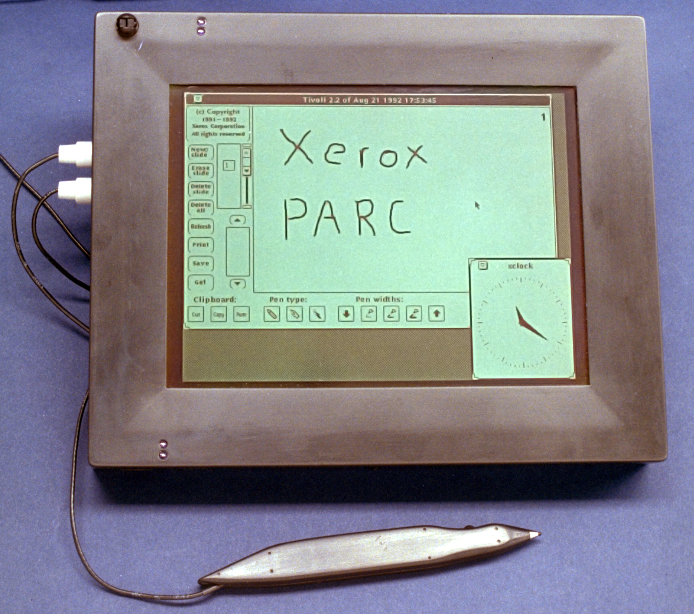

Ubicomp.eHealth
Who am I?
- Android TL @3Pillar Global
-
Master's in Ubicomp @ITU
- Developer - Pervasive Interaction Technology Laboratory
- Thesis - An Environment Simulator for Mobile Context-Aware System Design
- Java Developer @OCE
Overview
- Brief history of ubicomp
- Context-Awareness
- Pervasive Healthcare - eHealth, mHealth
Ubicomp - Brief History
 < 1970 |
 > 1971 - first commercial microprocessor > 1975 first PC |
> 1988 Mark Weiser, Xerox PARC |
Ubicomp - Brief History
- Ubiquitous = present, appearing, or found everywhere
- Ubiquitous Computing (ubicomp) = seamlessly integrate technology into our everyday lives
Ubicomp - Brief History
Ubiquitous computing names the third wave in computing, just now beginning. First were mainframes, each shared by lots of people. Now we are in the personal computing era, person and machine staring uneasily at each other across the desktop. Next comes ubiquitous computing, or the age of calm technology, when technology recedes into the background of our lives.
-- Mark Weiser
- Ubicomp program emerged in 1988 @PARC
-
What's wrong with the PC:
- too complex and hard to use
- too demanding of attention
- too isolating from other people and activities
- too dominating as it colonized our desktops and our lives
Context-Aware Computing
Context-Aware Computing
- Context = any information that can be used to characterize the situation of an entity
- Context-Awareness = the use of context to provide task-relevant information
Ubicomp - Testbead Devices ('88-'95)
 PARCtab > apps executed remotely (i.e. watch) |
 PARCpad > portable tablet |
 LiveBoard > share collaboration |
Ubicomp - PARCtab ('91-'93)
- Handheld computer, 2x3x0.5", ~ 200g, 2 w/e rechargeable battery life
- Phillips 8051 processor with 128k NVRAM
- 128x64 mono display, resistive touch screen, I2C external bus, IR Communication
- Applications are executed remotely (i.e. watch)
Ubicomp - PARCpad ('91-'93)
- Prototype pen computer, 9x11x1", ~ 2.27 kg, 4 hour battery life
- Motorola 683xx processor with 4 MB ram
- Running a unique real-time operating system
- 640x480 4 level display, electronic pen with a built-in microphone, keyboard and serial ports, PCMCIA slot
- IR Communication @19.2kbs, through a unique nearfield radio at 240kbs
Ubicomp - LiveBoard ('91-'93)
- Nearly one million pixels and an accurate, multi-state, cordless pen
- Provides a basis for research on user interfaces for group meetings, presentations and remote collaboration.
Ubicomp - ActiveBadge & IR hub
ActiveBadge |
 IR Hub |
Ubicomp - Infrastructure

Ubicomp - Applications
- An aid for a telephone receptionist
- Location (room) specific applications
- Group Pointing and Annotation
- Connected coffee machine
Ubicomp - The Man

Ubicomp - Toolkit
- Devices & Infrastructure
- Operating Systems & Communication Protocols
- HCI != WIMP
- Context-Awareness (location), Security
- Simulation Environments
Great times to live in
- Cloud computing, Big data
- Lots and lots of devices
- Emerging IoT - i.e. Google's Project Brillo + Weave
- Context data gathering - i.e. Android's Activity Recognition API
If you can dream it, you can build it
Pervasive Healthcare, eHealth, mHealth
- It is the application of ubicomp technologies for healthcare, health, and wellness management
- It is about making healthcare available everywhere, anytime, and to anyone
eHealth Systems - What's Imperative?
- Security, Security, Security ... oh, and Privacy
- Monitoring
- Specific HCI Design
- Field Trials
- Involvment of Doctors, Nurses, Patients during the entire process
Monarca
MONitoring, treAtment and pRediCtion of bipolAr Disorder Episodes
Bipolar Disorder
- a mental disorder characterized by transitions between depression and mania
- affects 2.6% in US and 1% in EU of the adult population
- is the 6th leading cause of disability
- 1 out of 2 people with bipolar disorder attempt suicide... at least once during their lifetime and many attempts are successfully completed
- however, a normal life can be lived with proper medication
Bipolar Disorder - treatment, the old way
- pen an paper based
- meetings with the doctor
- Problem: reports are incomplete, affected by the experienced mood states
Monarca
- subjective data: mood, sleep, self-reported activity level, etc
- objective data: movement data (accelerometer, GSM cell ID), mood from voiceprint, etc
- HCI: patient, doctor, nurse, family members
Monarca - System Overview
Academic Partners: ETH, ITU Copenhagen, Universitat Passau ...
- a sensor enabled mobile phone
- a wrist worn activity monitor
- a novel "sock integrated" physiological (GSR, pulse) sensor
- a stationary EEG system for periodic measurements
- [ITU] the HCI - self assessment, data interpretation, medication planning
Monarca - System Architecture
Monarca - Android App
Monarca - ITU
- [new_feature] mood forecast
- system designed together with doctors, nurses, patients
- clinical researchers: Department of Psychiatry at the University Hospital of Copenhagen
- clinical trial with over 60 patients
- research papers written both in IT and Healthcare
iHospital
- activity-based computing
- security, proximity based authentication
- warning systems, eRecords, smart bed, smart pill container, etc